Inicio › Routers y redes › Tp-Link
Routers y redes Tp-Link en Honduras: precios comparados
27 productos Tp-Link en 2 tiendas (Acosa, Sycom). Desde L 218.99.
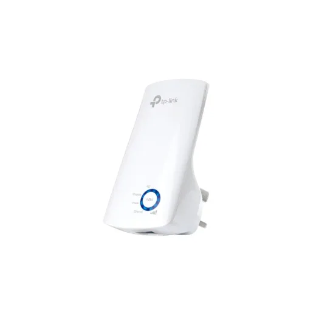
Repetidor Tp-Link 300mbps 2.4ghz D/Pared Access Point Tl-Wa850re 2 Antenas InterL 545En 2 tiendas · más barato en Acosa Switch 5 Puertos 10/100 Mbps C/Poe+ 4 Puertos Tp-Link P/Escritorio Tl-Sf1005PL 1,119En Acosa
Switch 5 Puertos 10/100 Mbps C/Poe+ 4 Puertos Tp-Link P/Escritorio Tl-Sf1005PL 1,119En Acosa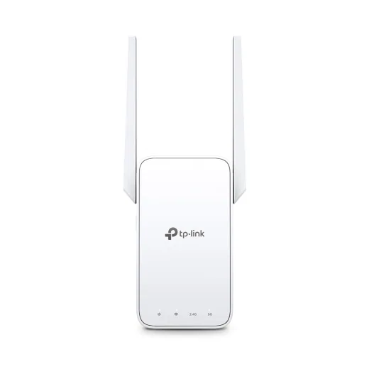
Repetidor Tp-Link 300Mbps 2.4Ghz D/Pared Access Point Re315L 1,045.01En Acosa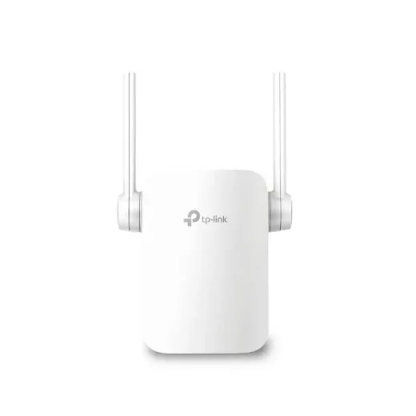
Repetidor Tp-Link 750Mbps Dual Band 2.4Ghz D/Pared Re205 Ac750L 1,045.01En Acosa Router Tp-Link 1200mbps Inalambrico 2.4ghz Ac1200 Dual Band 4 Antenas ExterL 939En Acosa
Router Tp-Link 1200mbps Inalambrico 2.4ghz Ac1200 Dual Band 4 Antenas ExterL 939En Acosa Switch 6 Puertos 10/100 Mbps C/Poe+ 4 Puertos Tp-Link Para Escritorio Tl-Sf1006PL 1,299.01En Acosa
Switch 6 Puertos 10/100 Mbps C/Poe+ 4 Puertos Tp-Link Para Escritorio Tl-Sf1006PL 1,299.01En Acosa Switch 16 Puertos 10/100 Mbps Tp-Link De Escritorio Tl-Sf1016DL 869En Acosa
Switch 16 Puertos 10/100 Mbps Tp-Link De Escritorio Tl-Sf1016DL 869En Acosa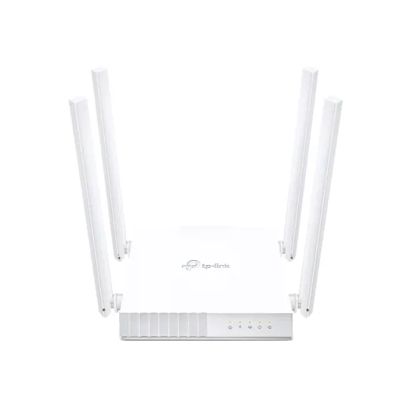
Router Tp-Link 750Mbps Inalambrico 5Ghz Ac750 Dual BandL 869En Acosa Access Point Tp-Link 450Mbps 2.4Ghz Tl-Wa901NL 866.61En Acosa
Access Point Tp-Link 450Mbps 2.4Ghz Tl-Wa901NL 866.61En Acosa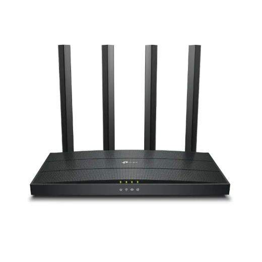
Router Tp-Link 1201Mbps Inalambrico 5Ghz Ax1500 Dual Band Wifi 6L 1,495En Acosa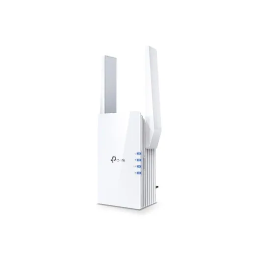
Repetidor Tp-Link 1500Mbps Dual Band 5Ghz Dual Band Ax1500L 1,569En Acosa Router Tp-Link 1900Mbps Inalambrico-N 2.4Ghz Doble Banda AC1900 Mu-MimoL 1,644.99En Acosa
Router Tp-Link 1900Mbps Inalambrico-N 2.4Ghz Doble Banda AC1900 Mu-MimoL 1,644.99En Acosa Switch 8 Puertos 10/100/1000 Mbps Tp-Link P/Escritorio Tl-Sg1008dL 709En Acosa
Switch 8 Puertos 10/100/1000 Mbps Tp-Link P/Escritorio Tl-Sg1008dL 709En Acosa Switch 8 Puertos 10/100/1000 Mbps Tp-Link Para Escritorio Ls1008GL 645En Acosa
Switch 8 Puertos 10/100/1000 Mbps Tp-Link Para Escritorio Ls1008GL 645En Acosa Router Tp-Link 300mbps Inalambrico 2.4ghz Dual Band Tl-Wr841n 2 Antenas ExterL 645En Acosa
Router Tp-Link 300mbps Inalambrico 2.4ghz Dual Band Tl-Wr841n 2 Antenas ExterL 645En Acosa Router Tp-Link 2402Mbps Inalambrico 5Ghz Ax3000 Dual Band Wifi 6L 2,429En Acosa
Router Tp-Link 2402Mbps Inalambrico 5Ghz Ax3000 Dual Band Wifi 6L 2,429En Acosa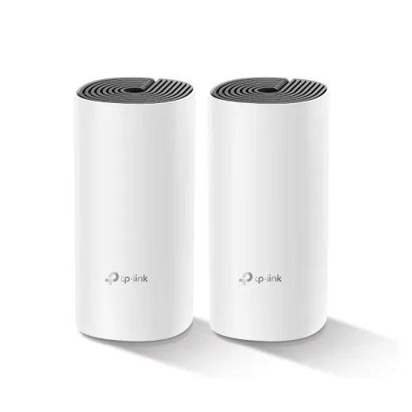
Repetidor Tp-Link 1200Mbps 2.4Ghz Deco E4Ac1200L 2,445En Acosa Switch 5 Puertos 10/100/1000 Mbps Gigabit Tp-Link Para Escritorio Ls1005GL 445En Acosa
Switch 5 Puertos 10/100/1000 Mbps Gigabit Tp-Link Para Escritorio Ls1005GL 445En Acosa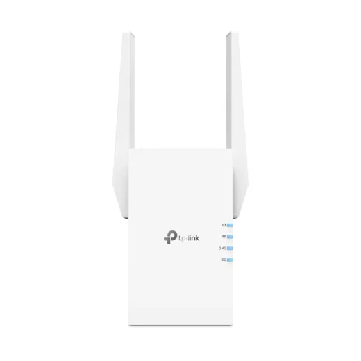
Repetidor Tp-Link 3000Mbps Dual Band 5Ghz Dual Band Ax3000L 2,839.01En Acosa Switch 5 Puertos 10/100/1000 Mbps Tp-Link P/Escritorio Tl-Sg1005dL 405En Acosa
Switch 5 Puertos 10/100/1000 Mbps Tp-Link P/Escritorio Tl-Sg1005dL 405En Acosa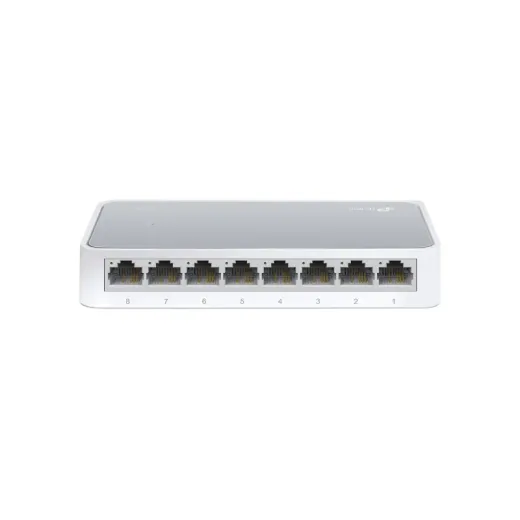
Switch 8 Puertos 10/100 Mbps Tp-Link P/Escritorio Tl-Sf1008dL 395En Acosa Switch 8 Puertos 10/100 Mbps Tp-Link Para Escritorio Ls1008L 345En Acosa
Switch 8 Puertos 10/100 Mbps Tp-Link Para Escritorio Ls1008L 345En Acosa Switch 5 Puertos 10/100 Mbps Tp-Link P/Escritorio Tl-Sf1005dL 345En Acosa
Switch 5 Puertos 10/100 Mbps Tp-Link P/Escritorio Tl-Sf1005dL 345En Acosa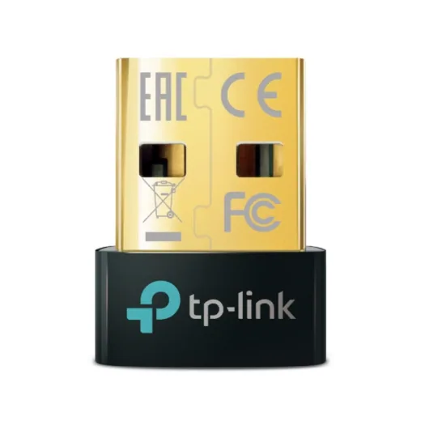
Adaptador Bluetooth Usb 5.4 Nano Tp-Link Ub500L 218.99En Acosa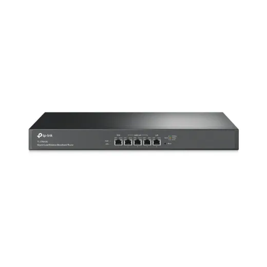
Switch 5 Puertos Wan/Lan 800mbps Tp-Link Gigabit Tl-Er5120L 2,849En Acosa Switch 8 Puertos 10/100/1000 Mbps Poe+ Tp-Link Gigabit Tl-Sg1008mpL 3,649En Acosa
Switch 8 Puertos 10/100/1000 Mbps Poe+ Tp-Link Gigabit Tl-Sg1008mpL 3,649En Acosa Router Tp-Link 300mbps 4g Lte+Cat6 Tigo Inalambrico 2.4ghz Ac1200L 3,995En Acosa
Router Tp-Link 300mbps 4g Lte+Cat6 Tigo Inalambrico 2.4ghz Ac1200L 3,995En Acosa
Preguntas frecuentes
¿Dónde están más baratos los routers y redes Tp-Link en Honduras?
Acosa tuvo el precio más bajo en 1 de 1 productos Tp-Link que se venden en varias tiendas (28 de noviembre de 2026).